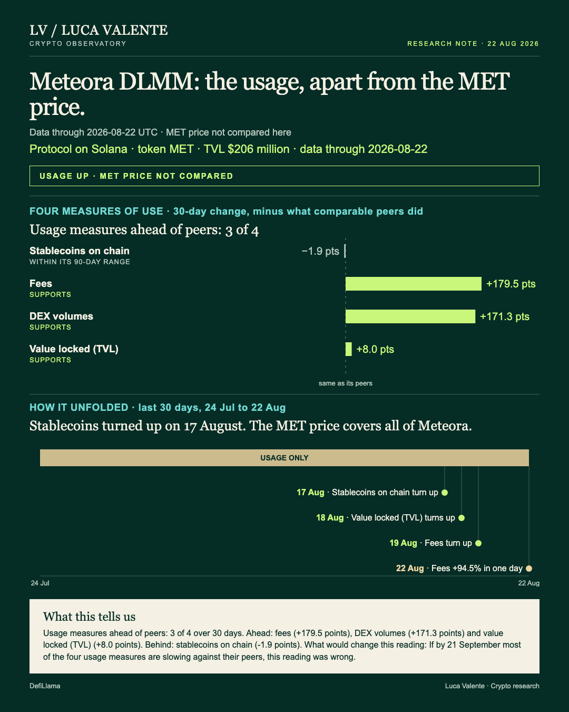
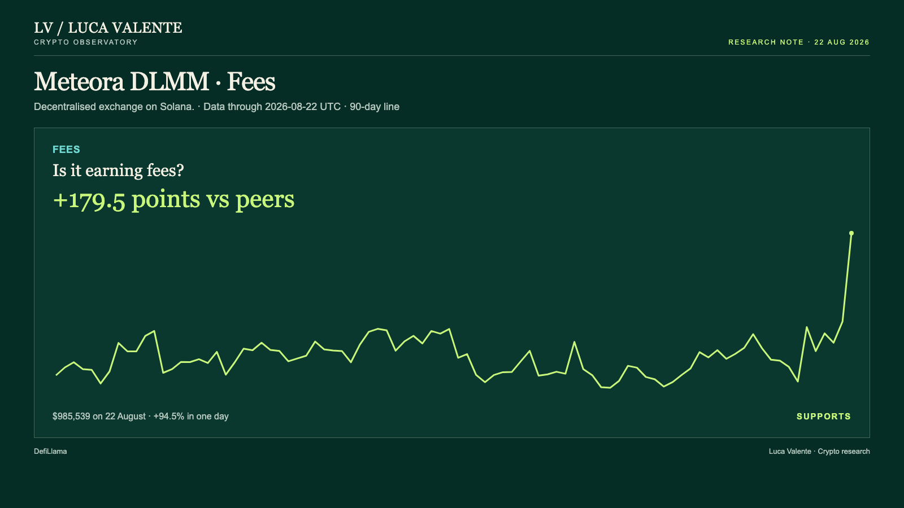
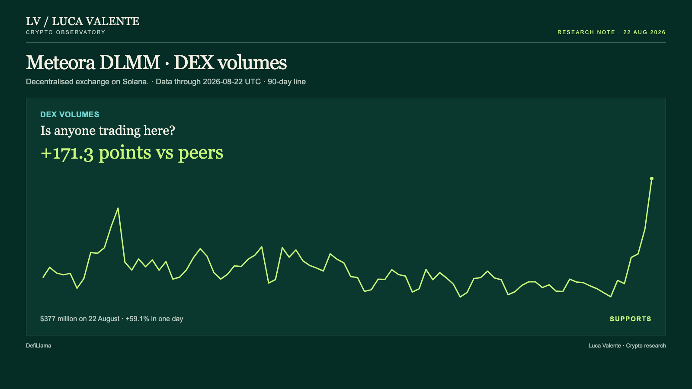

Training note, written on 23 September 2026 from data as of 22 August 2026. Not part of the published series.
Meteora DLMM's Fees Have Risen Since 19 August

Which of Meteora DLMM's usage measures turned up before its fees jumped 94.5% in a day? That size of move matters to anyone tracking Solana's exchanges: noise, or the start of a pattern.
Usage alone is what this note reads for Meteora DLMM, the concentrated-liquidity part of Meteora, a decentralised exchange that runs on Solana. It tracks fees, DEX volumes, value locked and stablecoins on the chain, and nothing about users or wallets. Its token, MET, carries the price of the whole of Meteora, so the price sits outside this note. The cover's header says usage is climbing, with MET's price left out. Its timeline marks 17 August as the day stablecoins on the chain turned up.
Order matters here more than size, since today's question is about timing. Stablecoins on the chain turned up on 17 August, five days before today's reading, and rose in four of the six days since. Value locked followed a day later, turning up on 18 August. Fees turned up on 19 August and have risen in three of the last four days. DEX volumes rose in five of the six days from 17 August.
Nothing here comes with an explanation: no announcement or news is attached to any of these dates, and nothing in this reading reaches past 22 August 2026.
Numbers for the day: $985,539 in fees on 22 August, up 94.5% from $506,709 the day before. Trading volumes reached $377 million the same day, up 59.1% from $237 million on 21 August.


Meteora DLMM sits in a group of 27, Dexs, and each line is compared only with the entities in it that report that line. Fees are up 296.9% over 30 days against a median of 117.4% for the 17 entities in the group that report fees: Meteora DLMM is 179.5 points ahead. DEX volumes are up 274.4% over 30 days against a median of 103.1% for the 27 entities in the group that report DEX volumes: Meteora DLMM is 171.3 points ahead. Value locked is up 12.9% over 30 days against a median of 4.9% for the 18 entities in the group that report it: Meteora DLMM is 8.0 points ahead.
One line here does not fit the pattern: stablecoins on the chain. They fell 0.8% from 21 to 22 August, to $16.19 billion. Over 30 days they are down 3.4%, against a median decline of 1.4% for the 25 entities in the group that report this measure. Meteora DLMM is 1.9 points behind that median. That's the only one of the four measures that is down over 30 days, and it turned up on 17 August. I do not have a clean way to weigh one measure that lags against three that are ahead of their peers.
Today's 59.1% DEX-volume jump sets the reference point, not one of the cases compared against it. Since September 2025, moves of at least that size have come up 993 times across the 25 protocols in the group that are not Meteora's own. Every one of those 25 has had at least one. Meteora DLMM itself has had 18. A week later, Meteora DLMM's volumes were back at or above that day's level in 6 of 18 cases, and 304 of 993 across the group. A month on, that held in 8 of Meteora DLMM's 17 readable cases and 253 of the group's 917. The month-later base is smaller: 77 of the 1,011 episodes are still too new to read.
Two measures are missing from this reading: there is no L2 transaction count for Meteora DLMM, and no developer commit count either. Neither is part of the case above.
Call it a test: what would turn this into an ordinary month rather than a notable one? If by 21 September most of the four usage measures are slowing against their peers, this reading was wrong.
DEX volumes, value locked and fees point the same way. Stablecoins have not caught up, and 21 September will say whether that gap closes or the story cools.
Sources: DefiLlama.
Peer group: 26 exchanges tracked by DefiLlama (who they are). 'Net of the group' is the 30-day change minus the group's median.
Not financial advice. This is a research note based on public on-chain data.